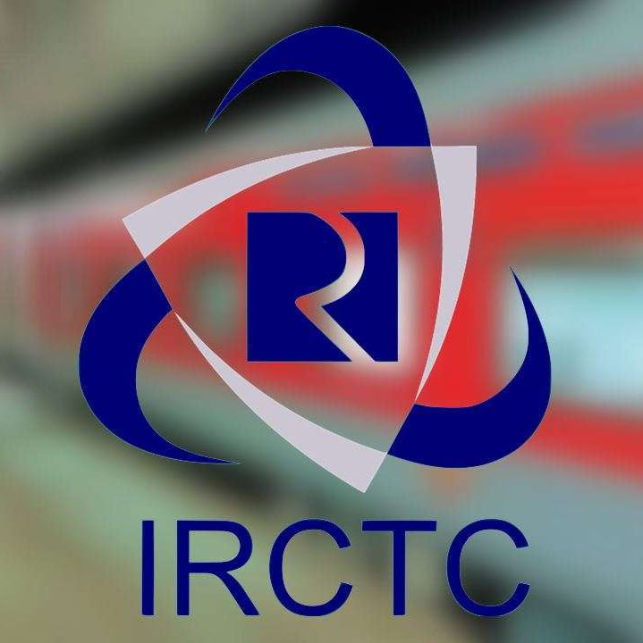

B.Tech at the MAKAUT University in Computer Science and Engineering.
During my studies, I focused on core areas like programming, data
structures, and software development, and worked on practical projects
to strengthen my skills.
My Projects
babyGPT is a transformer-based language model built from scratch using
PyTorch, featuring 275 million parameters with
16 layers and 12 attention heads. Trained on the
Wikitext-8 dataset, it includes a custom tokenizer and employs the
AdamW optimizer for improved convergence. The model incorporates core
components like multi-head self-attention, feedforward layers, layer
normalization, and positional encoding, all implemented manually.
After over 15,000 iterations, it showed steady loss reduction,
indicating successful learning. Teengpt provided deep insight into
large language model design, training, and optimization, and reflects
my passion for AI and hands-on expertise in deep learning
architecture.

IRCTC - Backend Service Java-based backend service designed to automate IRCTC train
ticket booking workflows, built using core Java and a
lightweight LocalDB setup. The system implements modules for
ticket booking, cancellation, seat availability tracking, and session
management without relying on external database systems, enabling
faster local data access and reduced overhead. It features custom data
models and logic to manage real-time seat allocations and
cancellations efficiently. The application follows a modular and
object-oriented design, optimizing performance for
single-machine deployments and enabling future scalability toward
networked or RESTful implementations.
Walmart Sales Data Analysis
end-to-end pipeline is developed for Walmart sales forecasting
using real-world time-series data. The dataset is preprocessed to
handle missing values, convert date features, and engineer variables
such as holiday flags and rolling averages. Exploratory Data Analysis
(EDA) is performed to uncover store-wise and department-level sales
trends, seasonality, and anomalies. Machine learning models including
Random Forest Regressor and
XGBoost
are trained on historical data with hyperparameter tuning and
cross-validation. Feature importance analysis highlights the impact of
temporal and event-based variables. The final models are evaluated
using RMSE and MAPE, delivering robust short-term sales predictions
for operational optimization.
Paddy Disease Classification
A Vision Transformer (ViT-Large-Patch16-224) model is fine-tuned
to classify paddy leaf diseases across 10 distinct categories using
high-resolution agricultural imagery. The workflow includes rigorous
data preprocessing: resizing to 224x224 pixels, random cropping,
affine transformations, and normalization based on ImageNet stats.
Training is conducted in PyTorch with the AdamW optimizer and
cross-entropy loss. Careful tuning and augmentation strategies help
the model generalize well, achieving 98.15% accuracy on the
Kaggle competition test set. Evaluation includes per-class metrics and
confusion matrix analysis, demonstrating the viability of
transformer-based architectures in real-world plant disease
classification and precision agriculture.